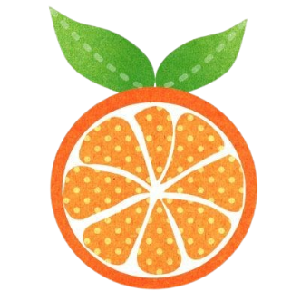
SERIES/FILMS
-
Currently Watching
-
Recommendations
Currently Watching
The Pursuit of Jade

It follows Fan Chang Yu, a butcher’s daughter, and Xie Zheng, a fallen noble seeking revenge. Their fake marriage turns into true love, but war tears them apart. Determined, Fan Chang Yu wields her butcher’s knife on the battlefield, searching for justice and her husband. Meanwhile, Xie Zheng reclaims his title, fighting to protect his country and love. Reunited in battle, they stand together, defying fate and uncovering the truth
Mobius

Detective Lu Tianfeng discovers he can relive the same day up to five times, using this ability to solve difficult cases. When a mysterious criminal known as X begins committing seemingly perfect crimes, Lu suspects the killer may share his time-loop power. As clues lead to a genetic research company and people close to him become involved, Lu uses repeated timelines to uncover the truth and ultimately solve the case, gaining a deeper understanding of his unusual ability.
Weak Hero Season 2
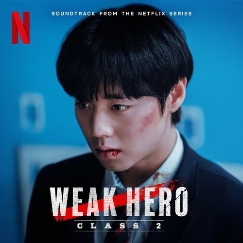
A quiet but brilliant high school student becomes the target of severe bullying. Though physically unimposing, he uses intelligence, psychological tactics, and strategic thinking to fight back. As violence escalates, he forms fragile friendships and confronts the emotional consequences of survival in a harsh school environment
Sweet Home
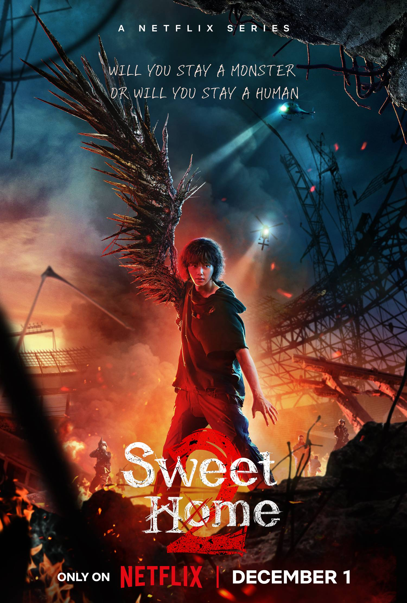
After a family tragedy, a withdrawn teenager moves into a deteriorating apartment complex. Soon, humans begin transforming into monsters that reflect their deepest desires. The residents must work together to survive while confronting fear, isolation, and what it means to remain human in extreme circumstances.
Hell's Paradise 2
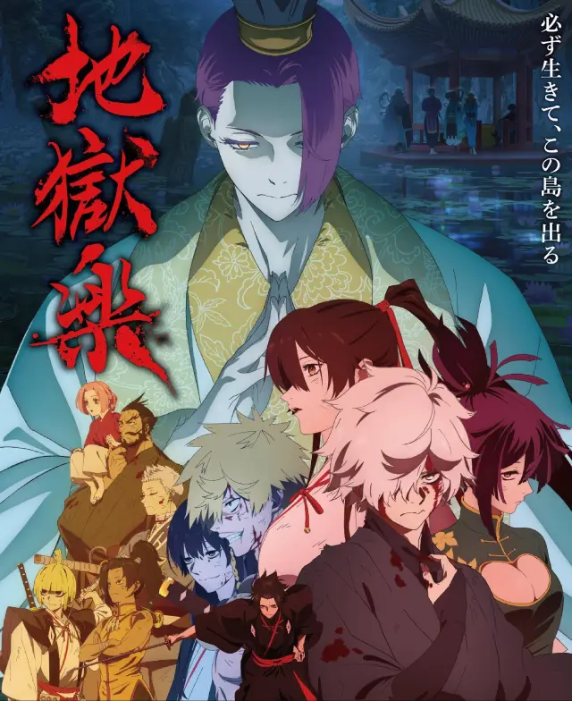
Gabimaru is a ninja on death row with one chance to see his wife again — by finding the elixir of immortality on a supernatural island and delivering it to the shogun. Standing in his way are his fellow convicts and the fearsome beasts that roam the island, devouring or killing anyone they encounter. Along with the executioner Sagiri they face monstrous creatures, treacherous terrain and moral dilemmas along the way.
Invincible Season 4

Teenager Mark Grayson inherits superpowers from his father, the world’s most famous superhero. As he begins training to protect humanity, he learns that heroism involves brutal responsibility and moral complexity. A shocking revelation about his father forces him to reconsider what it truly means to be a hero.
Ghosts
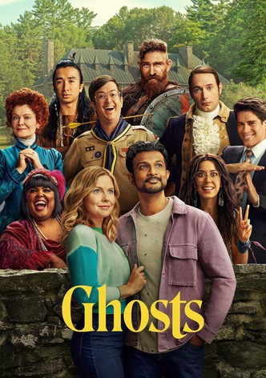
After inheriting a large country house, Samantha and her husband plan to turn it into a bed-and-breakfast. Following a near-death accident, Samantha gains the ability to see and communicate with the ghosts who inhabit the property. Spirits from different historical periods, each with unfinished business. The comedy follows Samantha balancing her normal life while helping the ghosts resolve personal regrets and find peace.
Recommendations
The Hotspot
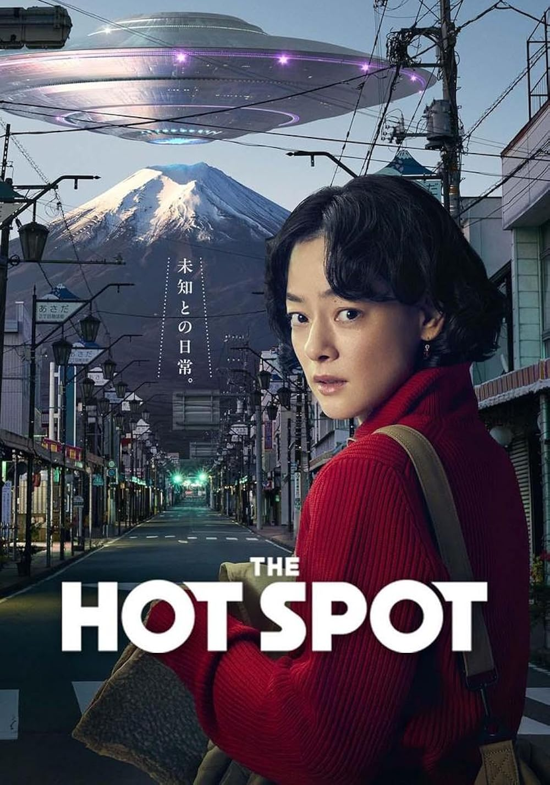
Kiyomi Endo (Mikako Ichikawa) is a single mother living in a town at the foot of Mt. Fuji in Yamanashi Prefecture. She works at a business hotel. After encountering a resident alien, she uses his powers to solve minor personal and work problems rather than fighting injustice, blending whimsical sci-fi with charming, quiet daily life.
Reset
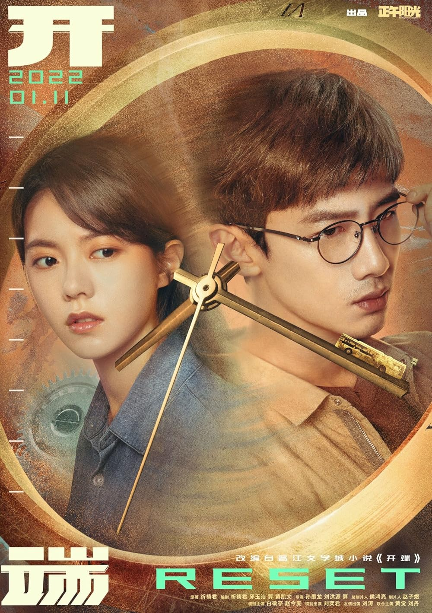
After a bus explosion kills them, a university student and a game designer find themselves trapped in a time loop that forces them to relive the same bus ride repeatedly. Working together, they try to identify the cause of the explosion and save the passengers before time runs out.
Duty After School

High school students are suddenly drafted into the military when mysterious alien spheres appear in the sky and begin attacking Earth. Forced to fight for survival, the teenagers confront fear, sacrifice, and the harsh reality of war while trying to protect one another.
How Dare You?
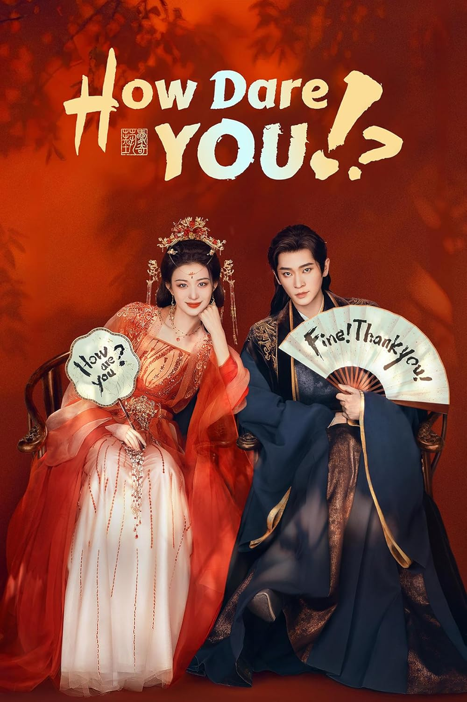
A costume drama following Wang Cuihua, an office worker who transmigrates into a palace novel. To escape her fate as a villain, she joins forces with the tyrant king—also a modern transmigrator—to navigate power struggles, defeat enemies, and survive the treacherous imperial court
Welcome to Waikiki
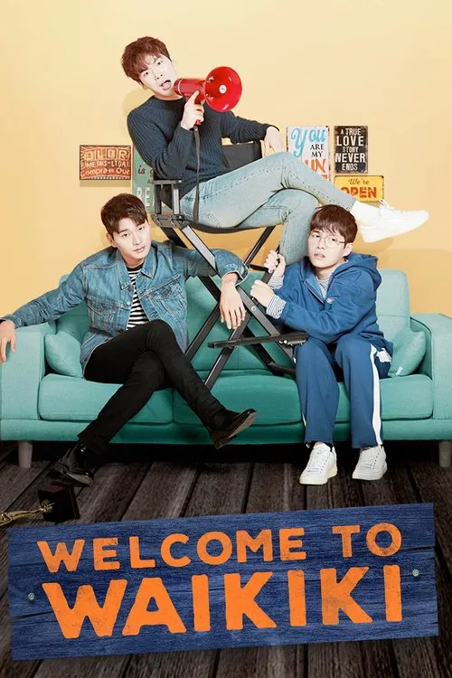
Three struggling friends run a failing guesthouse called Waikiki while chasing their dreams in film, acting, and writing. Their chaotic lives become even more complicated when an unexpected baby and new housemates turn daily life into a series of hilarious misadventures about friendship, ambition, and growing up.
The Penthouse
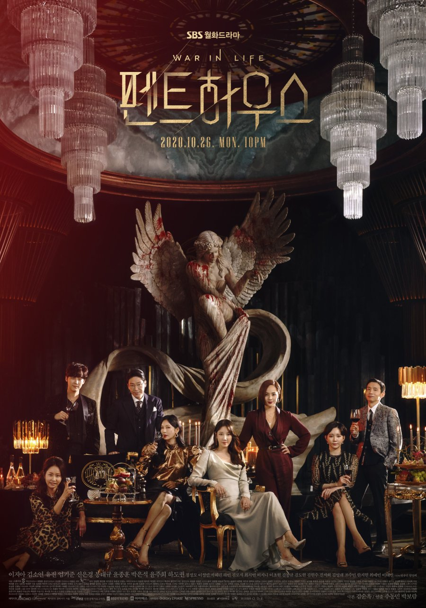
A suspenseful K-drama focused on wealthy residents living in the 100-floor Hera Palace and their cutthroat ambition to secure their children's success at Cheong-ah Arts School. The plot revolves around secrets, murder, adultery, and revenge following the death of a young girl, Min Seol-ah, within the complex.
Mr. Queen
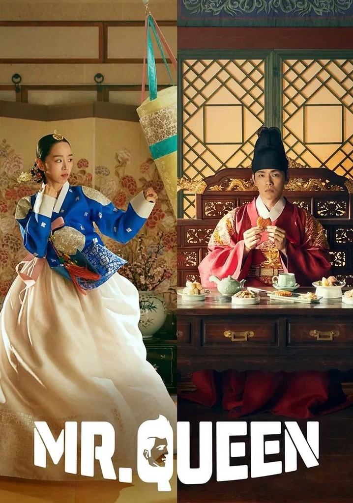
After an accident, a modern-day male chef’s soul is transported into the body of a queen in Korea’s Joseon era. Struggling to adapt to palace life and royal politics, he must navigate court intrigue while hiding his true identity, leading to comedic situations and unexpected romance.
Brush Up Life
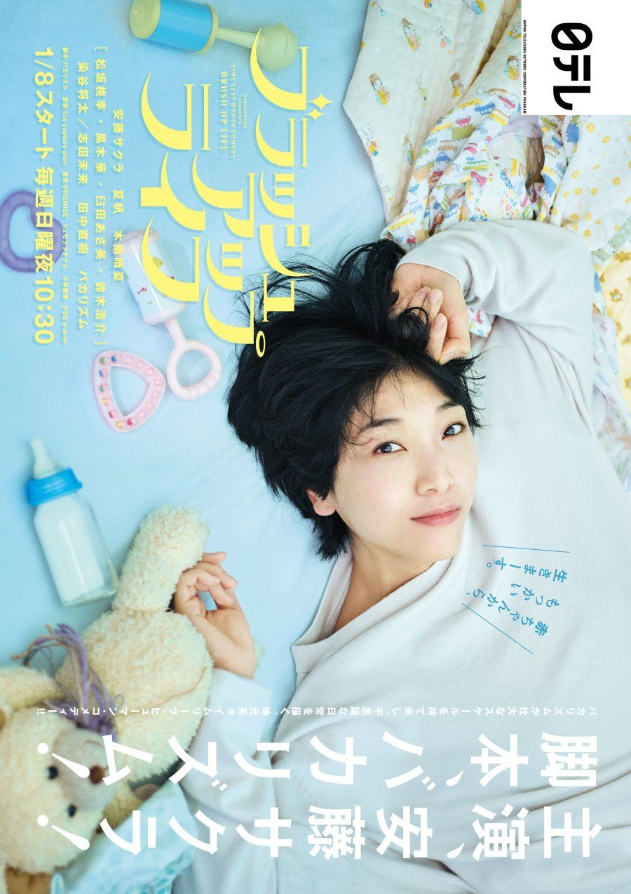
A 33-year-old office worker dies unexpectedly and finds herself in a strange afterlife waiting room. She learns that, based on the good deeds in her life, she is destined to be reincarnated as an animal. Unsatisfied, she chooses to restart her life from childhood while retaining all her memories. With each repeated lifetime, she tries to make better choices, help more people, and improve her karma, gradually discovering how small actions shape destiny and relationships.
Love Game in Eastern Fantasy
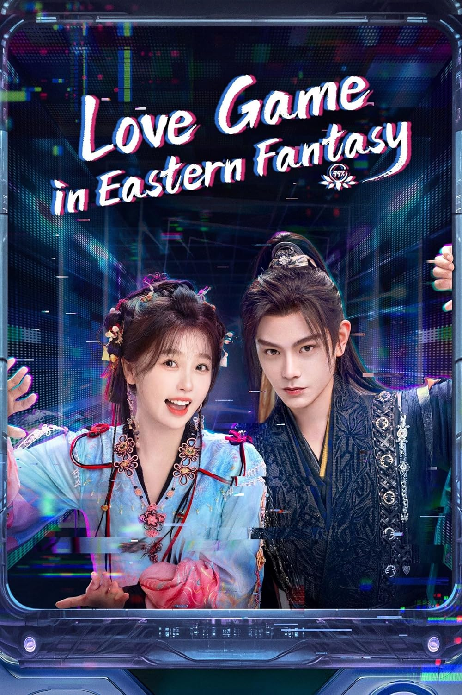
A modern girl unexpectedly enters the world of a fantasy novel and must complete difficult missions to survive. As she navigates romance, danger, and magical conflicts, she challenges the story’s original fate and gradually forms complicated relationships with its characters.
WEBTOONS
-
Currently Reading
-
Recommendations
Currently Reading
Omniscient Reader's Viewpoint
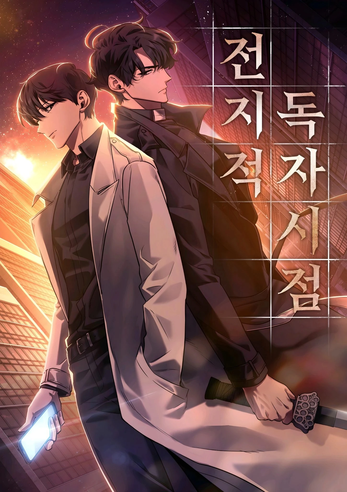
Dokja was an average office worker whose sole interest was reading his favorite web novel 'Three Ways to Survive the Apocalypse.' But when the novel suddenly becomes reality, he is the only person who knows how the world will end. Armed with this realization, Dokja uses his understanding to change the course of the story, and the world, as he knows it.
The Perks of Being an S-class Heroine
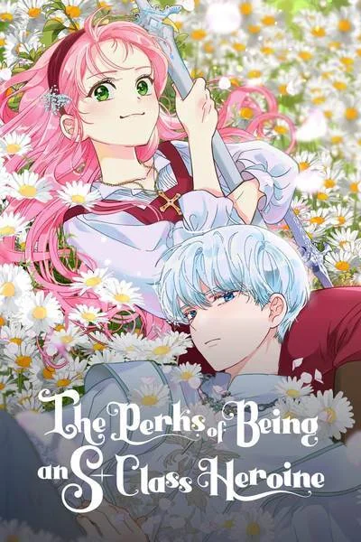
On the outside, Ailette Rodeline is an adorable child prodigy. Cooking, brewing tea, alchemy; you name it, she can do it. But this little girl has a big secret: Ailette is a transmigrator! After dying prematurely in her past life, she becomes a character whose world is destined for destruction. With all odds stacked against her, Ailette must figure out how to survive before her life is ripped from her again. Fortunately for her, she finds her salvation in… an insurance package?
SSS-class Revival Hunter
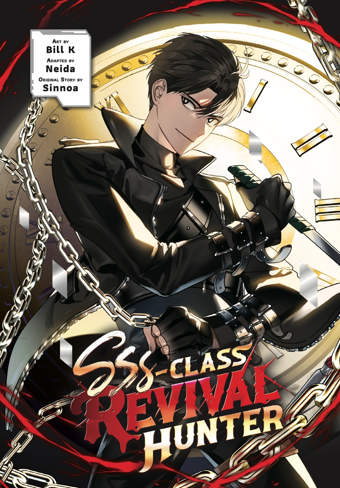
A weak hunter gains a unique ability: whenever he dies, he copies the killer’s power and travels back in time. Using repeated deaths, he grows stronger and climbs the tower while uncovering deeper truths about the system.
Tyrant of the Tower Defense Game
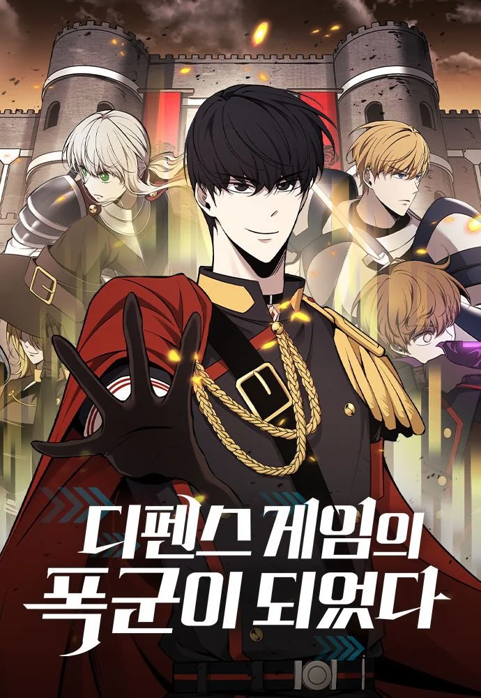
Ash was a video game streamer, nicknamed "classic otaku". Once he managed to complete one of the most complicated classic games, "Protect the Empire", he was sucked into the game world and reincarnated as the crown prince, completely psychopathic. In the original game, he was known as the worst commander who caused the near destruction of the city's armed forces, and met a tragic end. However, Ash is determined to survive as an "invincible" commander.
What a Bountiful Harvest Demon Lord
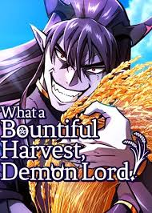
A demon lord abandons traditional destruction and instead focuses on farming and building a peaceful, prosperous land. The story humorously flips expectations of evil rulers into one about growth, community, and unconventional leadership.
Spy Family
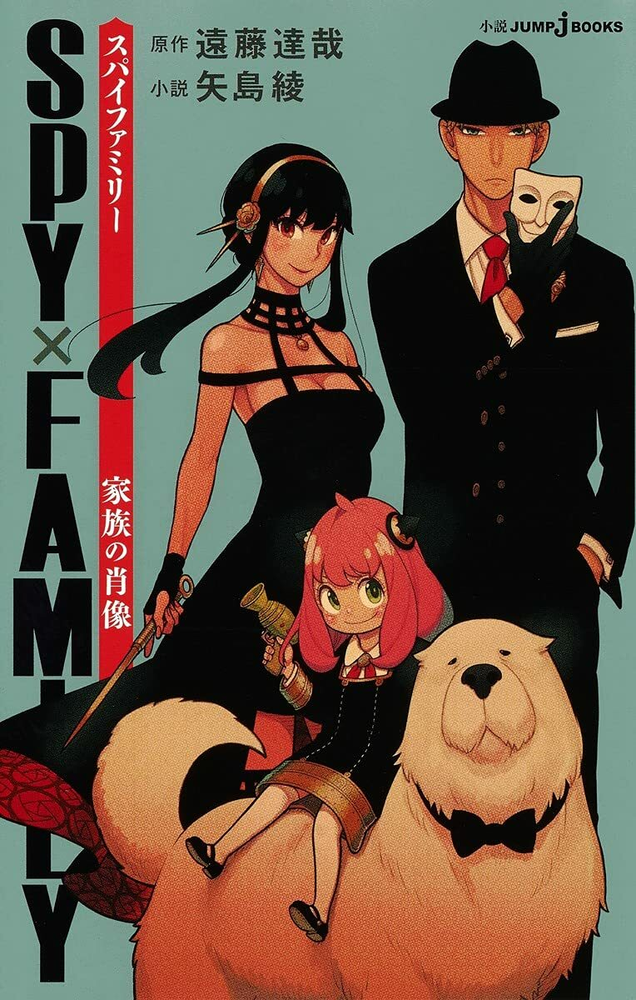
A master spy must create a fake family for a mission, unknowingly adopting a telepathic girl and marrying an assassin. Each hides their identity while navigating family life, blending action, comedy, and heartfelt moments.
School Bus Graveyard
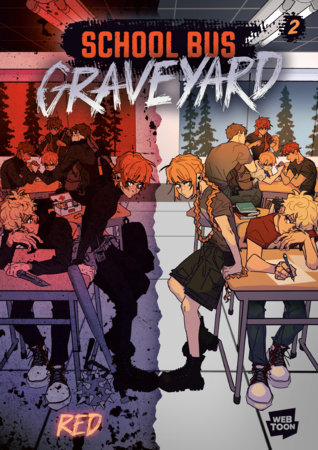
A group of students becomes trapped in a terrifying alternate dimension filled with monsters after boarding a bus. They must survive nightly horrors while uncovering the mystery behind the world they’re stuck in.
Marionetta
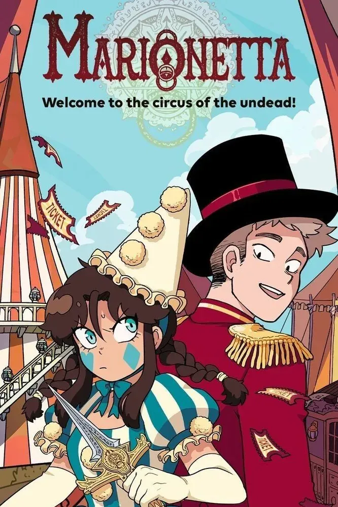
A girl enters a mysterious circus where performers cannot die and are bound by strange contracts. As she becomes entangled in their world, she uncovers dark secrets about freedom, identity, and control.
Seasons of Lovesome
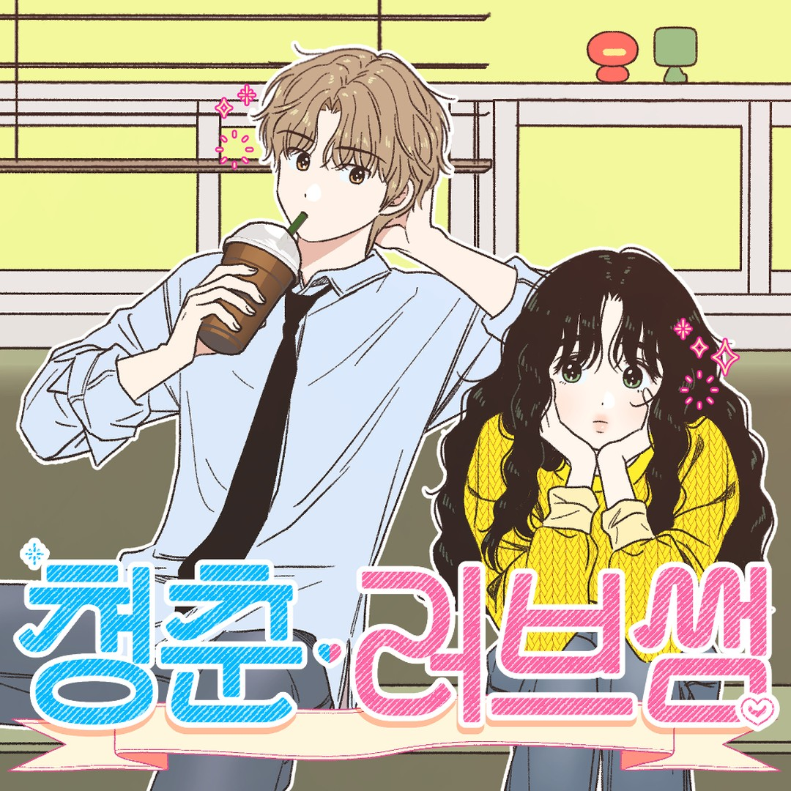
Life isn’t always perfect, but love certainly makes it better. The exciting tale of young love continues a year following the story “Seasons of Blossom.” Bomi and her university classmate Pureum’s lives center around a new place, “Cafe Blossom & Nemone Art Studio,” as they navigate the joy and hardships of university and professional life.
Dr. Kim of London
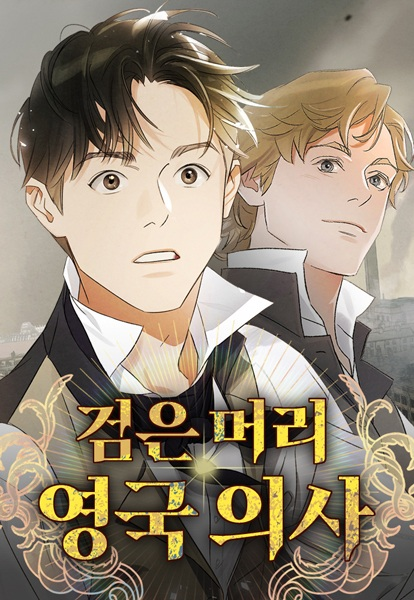
A state-of-the-art operating room with pristine surgical equipment? No can do; just a rusty bone saw in front of a jeering crowd for you! Sound like a waking nightmare? Well, that’s the best that the finest 19th century British medicine has to offer Taepyeong Kim, a young student from Joseon who retains the memory of his past life as a surgeon in modern-day Korea. For Taepyeong, London’s supposedly cutting-edge medical education is nothing but one barbaric display of malpractice after another, and he vows to drag the profession kicking and screaming into the modern age.
Recommendations
Maru is a Puppy
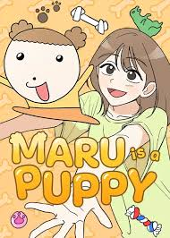
Woori’s 5-year old poodle mix, Maru, has turned into a human — a 5-year old little girl, that is! Now Woori’s gone from pet owner to big sister, and it’s her job to keep Maru out of trouble. Human Maru has the same endless curiosity and playfulness of a puppy, but now she can walk into grocery stores, go to kindergarten, and check this out — hold things with her opposable thumbs. Being human rules!
The Greatest Estate Developer

When civil engineering student Suho Kim falls asleep reading a fantasy novel, he wakes up as a character in the book! Suho is now in the body of Lloyd Frontera, a lazy noble who loves to drink, and whose family is in a mountain of debt. Using his engineering knowledge, Suho designs inventions to avert the terrible future that lies in wait for him. With the help of a giant hamster, a knight, and the world’s magic, can Suho dig his new family out of debt and build a better future?
Gantz
After dying, people are forced into a deadly game where they must hunt aliens using advanced weapons. The series explores survival, morality, and human nature under extreme conditions.
Daytime Star
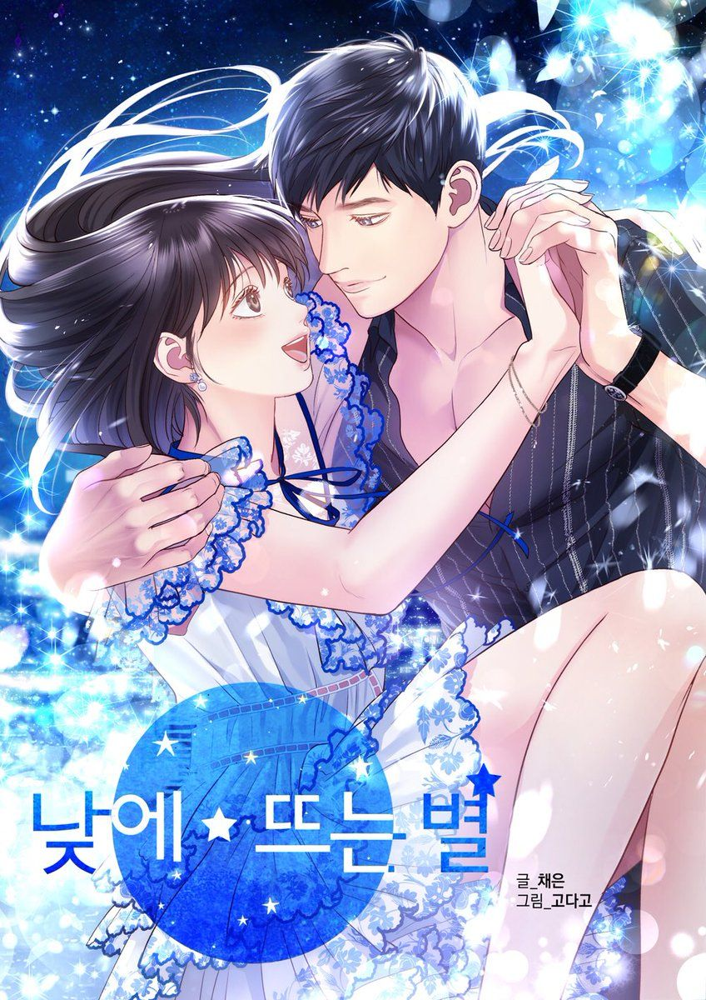
A struggling actress gets a second chance at success and love when she meets a top star. The story follows her growth in the entertainment industry and her developing romance.
Seasons of Blossom
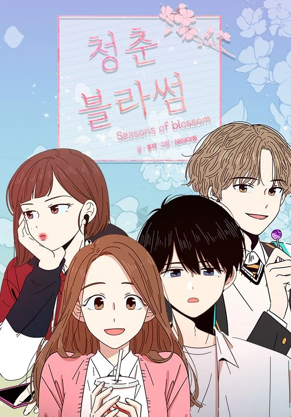
Oh, to be young and in love. Oh, to be wild and carefree. The springtime of life is intense, tumultuous, and at times, oh so confusing. Spring, summer, fall and winter -- love blossoms in all seasons.
Beware the Villainess
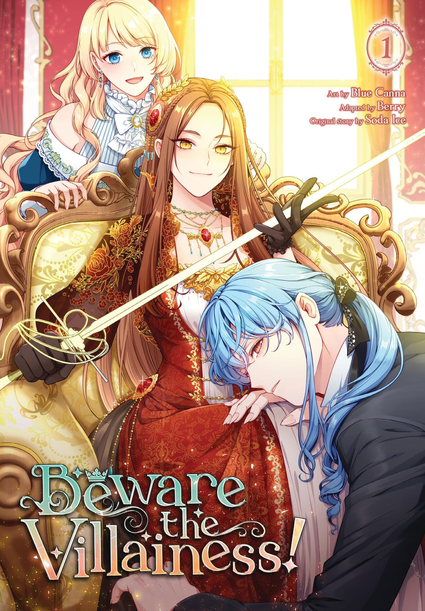
A woman reincarnates as the villainess of a romance novel but refuses to follow the original story. She takes control of her life, rejects toxic characters, and rewrites her fate with humor and confidence.
Black Paradox
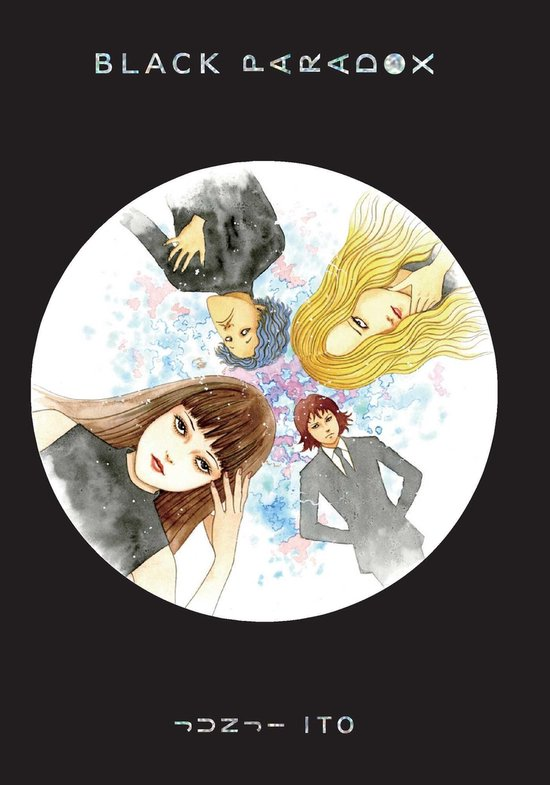
Four strangers meet online with the intention of ending their lives together, but instead encounter strange supernatural phenomena that connect them in unexpected and unsettling ways.
Uzumaki
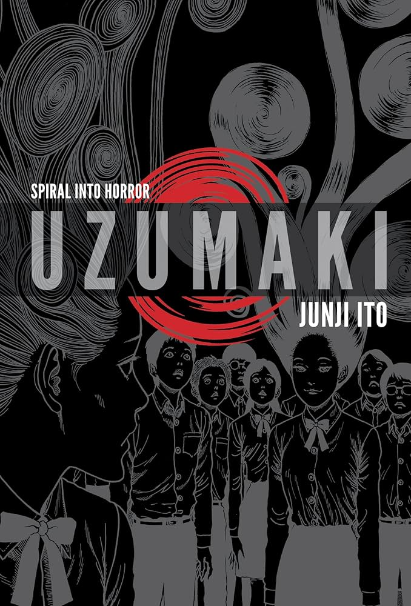
A town becomes obsessed with spirals, leading to increasingly disturbing and surreal events. As the obsession grows, reality itself begins to twist into horror.
Ningen Shikkaku (No Longer Human)
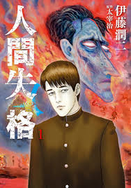
A deeply introspective story about a man who feels disconnected from society and struggles with identity, depression, and the inability to understand human relationships.
The Promised Neverland
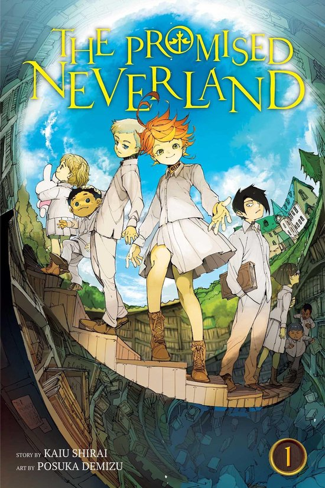
The Promised Neverland follows Emma, Norman, and Ray, three highly intelligent children living an idyllic life in an orphanage, Grace Field House, under the care of "Mama" Isabella. Their peaceful existence is shattered when they discover a terrifying truth about their home's purpose and decide to orchestrate a high-stakes escape to save all their siblings.